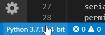
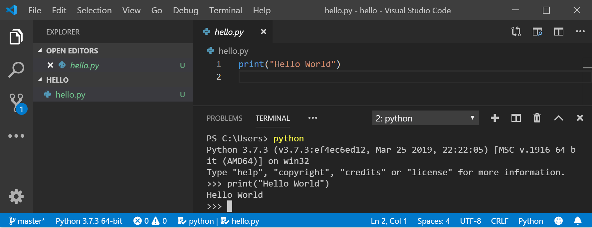
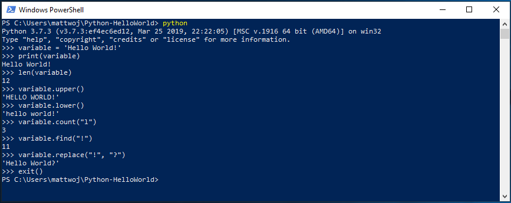
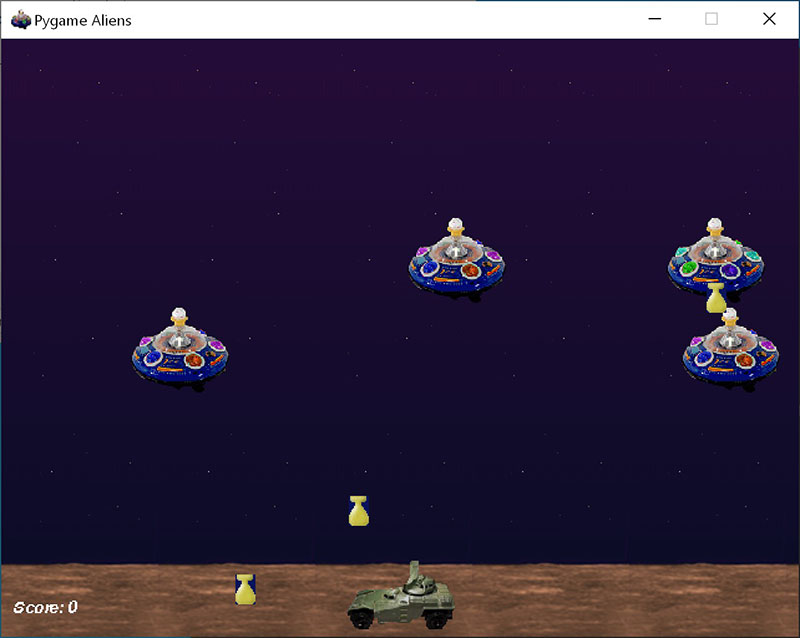
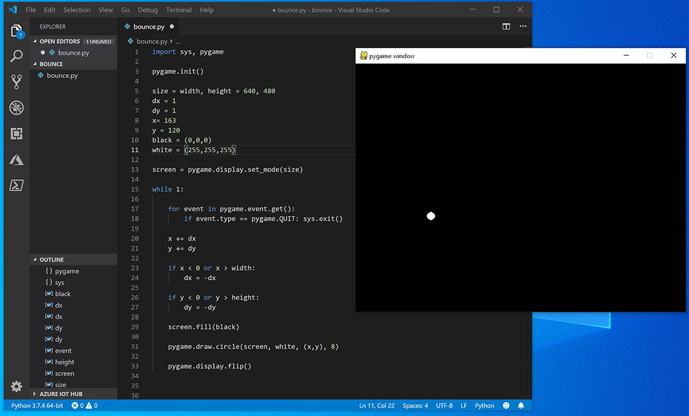

本文由葡萄城技术团队于原创并首发
转载请注明出处：葡萄城官网，葡萄城为开发者提供专业的开发工具、解决方案和服务，赋能开发者。
一直以来C#都是微软在编程语言方面最为显著的Tag，但时至今日Python已经从一个小众语言，变成了世界编程语言排行榜排名前列的语言了。
Python也在Web开发、网络爬虫、数据分析、大数据处理、机器学习、科学计算及绘图等领域有着不错的天然优势和不俗的表现。微软再从收购了Github后，在开源社区投入的力度越来越大，所以对于Python的支持，和为Python社区提供更多的贡献，微软本身也承担起了更多的责任。
所以近日，微软上线了一套Python教程《Develp with Python on Windows》，文档内容包括设置Python开发环境、在Windows与WSL子系统中安装相应开发工具，以及如何集成VS Code与Git工具并进行开发等。下来也让我们先来看看如何配置Python开发环境以及Hello World教程。
对于不熟悉 Python 的新手, 我们建议从 Microsoft Store 安装 Python。 通过 Microsoft Store 安装将使用 basic Python3 解释器, 但会为当前用户 (避免需要管理员访问权限) 设置路径设置, 并提供自动更新。 如果你处于教育环境或组织中限制权限或管理访问权限的部分, 则此项特别有用。
如果在 Windows 上使用 Python 进行web 开发, 则建议为开发环境设置其他设置。 建议通过适用于 Linux 的 Windows 子系统安装和使用 Python, 而不是直接在 Windows 上安装。 有关帮助, 请参阅:开始在 Windows 上使用 Python 进行 web 开发。 如果你有兴趣自动执行操作系统上的常见任务, 请参阅以下指南:开始在 Windows 上使用 Python 进行脚本编写和自动化。 对于某些高级方案 (例如需要访问/修改 Python 的已安装文件、创建二进制文件的副本或直接使用 Python Dll), 你可能需要考虑直接从python.org下载特定的 Python 版本, 或考虑安装一种替代方法, 如 Anaconda、Jython、PyPy、WinPython、IronPython 等。仅当你是更高级的 Python 程序员时, 才建议使用此方法, 具体原因是选择替代实现。
使用 Microsoft Store 安装 Python:
中转到 "开始" 菜单 (左下方的窗口图标), 键入 "Microsoft Store", 选择用于打开应用商店的链接。
打开存储区后, 选择右上方菜单中的 "搜索", 然后输入 "Python"。 从 "应用" 下的结果中打开 "Python 3.7"。 选择 "获取"。
Python 完成下载和安装过程后, 请使用 "开始" 菜单 (左下方的窗口图标) 打开 Windows PowerShell。 打开 PowerShell 后, 输入Python --version以确认已在计算机上安装 Python3。
Python 的 Microsoft Store 安装包含pip, 即标准包管理器。 Pip 允许你安装和管理不属于 Python 标准库的其他包。 若要确认还具有用于安装和管理包的 pip, 请输入pip --version。
通过使用 VS Code 作为文本编辑器/集成开发环境 (IDE), 可以利用IntelliSense (代码完成帮助) Linting (有助于避免在代码中产生错误)、调试支持(帮助你在中查找错误)运行后的代码)、代码片段(小型可重用代码块的模板) 以及单元测试(使用不同类型的输入测试代码的接口)。
VS Code 还包含一个内置终端, 使你能够使用 Windows 命令提示符、PowerShell 或你喜欢的任何方式打开 Python 命令行, 从而在你的代码编辑器和命令行之间建立无缝的工作流。
若要安装 VS Code, 请下载适用于https://code.visualstudio.comWindows 的 VS Code:。
Python 是一种解释型语言, 若要运行 Python 代码, 必须告知 VS Code 要使用的解释器。建议坚持使用 Python 3.7, 除非你有特定的原因要选择其他内容。 若要选择 python 3 解释器, 请打开命令面板(Ctrl + Shift + P), 开始键入以下命令:选择 " 解释器" 进行搜索, 并选择命令。 你还可以使用底部状态栏上的 "选择 Python 环境" 选项 (如果可用) (它可能已显示选定的解释器)。 该命令显示 VS Code 可以自动查找的可用解释器列表, 包括虚拟环境。 如果看不到所需的解释器, 请参阅配置 Python 环境。

若要在 VS Code 中打开终端, 请选择 "查看 > 终端", 或者使用快捷方式Ctrl + ' (使用反撇号字符)。 默认终端为 PowerShell。
在 VS Code 终端中, 只需输入以下命令即可打开 Python:python
输入以下内容, 尝试使用 Python 解释print("Hello World")器:。 Python 将返回语句 "Hello World"。

如果你计划在 Python 代码上与其他人进行协作, 或在开源站点 (例如 GitHub) 上托管你的项目, VS Code 支持使用 Git 进行版本控制。 VS Code 中的 "源代码管理" 选项卡跟踪所有更改, 并在 UI 中内置内置的 Git 命令 (添加、提交、推送和拉取)。 首先需要安装 Git 才能打开源代码管理面板。
从git-scm 网站下载并安装适用于 Windows 的 Git。
其中包含了一个安装向导, 该向导将询问一系列有关 Git 安装设置的问题。 建议使用所有默认设置, 除非您有特定原因要更改某些内容。
如果以前从未处理过 Git, GitHub 指南可帮助你入门。
根据其 creator Guido van Rossum, Python 是一种 "高级编程语言", 其核心设计理念全部与代码可读性和语法相关, 使程序员能够在几行代码中表达概念。 "
Python 是一种解释型语言。 与编译的语言不同, 你编写的代码需要转换为机器代码才能由计算机处理器运行, Python 代码直接传递给解释器并直接运行。 只需键入代码并运行代码。 试试吧!
打开 PowerShell 命令行后, 输入python以运行 Python 3 解释器。 (某些指令更喜欢使用命令py或python3, 它们也应该有效。) 你将知道, 你会成功, 因为将显示一个 > > > 提示, 其中三个符号为三个。
可以通过几种内置方法修改 Python 中的字符串。 使用以下方式创建变量: variable = 'Hello World!'。 对于新行, 请按 Enter。
用以下内容打印变量print(variable):。 这会显示文本 "Hello World!"。
使用: len(variable)查找字符串变量的长度和使用的字符数。 这会显示使用了12个字符。 (请注意, 该空格在总长度中被计为一个字符。)
将字符串变量转换为大写字母: variable.upper()。 现在将字符串变量转换为小写字母: variable.lower()。
计算在字符串变量中使用字母 "l" 的次数: variable.count("l")。
搜索字符串变量中的特定字符, 让我们查找感叹号, 使用: variable.find("!")。 这会显示感叹号位于字符串的第11个位置字符中。
将感叹号替换为问号: variable.replace("!", "?")。
若要退出 Python, 可以输入exit()、 quit()或, 然后选择 Ctrl + z。

希望使用 Python 的某些内置字符串修改方法时要开心。 现在, 请尝试创建 Python 程序文件并使用 VS Code 运行该文件。
VS Code 团队已结合了有关 Python 的精彩入门教程, 介绍如何使用 python 创建 Hello World 程序、运行程序文件、配置和运行调试器, 以及安装程序包 (例如matplotlib和numpy在虚拟环境中创建图形绘图。
1. 打开 PowerShell 并创建名为 "hello" 的空文件夹, 导航到此文件夹, 然后在 VS Code 中打开它:
mkdir hello
cd hello
code .
2. VS Code 打开后, 在左侧的资源管理器窗口中显示新的 " hello " 文件夹, 通过按Ctrl + ' (使用反撇号) 或选择 "查看 > ",在VSCode的底部面板中打开命令行窗口。终端。 通过在文件夹中开始 VS Code, 该文件夹将成为你的 "工作区"。 VS Code 存储特定于 vscode/settings 中的工作区的设置, 它们不同于全局存储的用户设置。
3. 继续 VS Code 文档中的教程:创建 Python Hello World 源代码文件。

Pygame 是一种流行的 Python 包, 用于编写游戏-鼓励学生学习编程, 同时创建有趣的东西。Pygame 在新窗口中显示图形, 因此它将无法在 WSL 的命令行方法下运行。 但是, 如果您通过本教程中所述的 Microsoft Store 安装了 Python, 它将正常工作。
安装 Python 后, 通过键入python -m pip install -U pygame --user从命令行 (或 VS Code 内的终端) 安装 pygame。
通过运行示例游戏来测试安装:python -m pygame.examples.aliens
一切正常, 游戏就会打开一个窗口。 完成播放后, 关闭窗口。
下面介绍了如何开始编写自己的游戏。
打开 PowerShell (或 Windows 命令提示符) 并创建一个名为 "弹跳" 的空文件夹。 导航到此文件夹并创建一个名为 "bounce.py" 的文件。 在 VS Code 中打开文件夹:
mkdir bounce
cd bounce
new-item bounce.py
code .2. 使用 "VS Code", 输入以下 Python 代码 (或复制并粘贴):
import sys, pygame
pygame.init()
size = width, height = 640, 480
dx = 1
dy = 1
x= 163
y = 120
black = (0,0,0)
white = (255,255,255)
screen = pygame.display.set_mode(size)
while 1:
for event in pygame.event.get():
if event.type == pygame.QUIT: sys.exit()
x += dx
y += dy
if x < 0 or x > width:
dx = -dx
if y < 0 or y > height:
dy = -dy
screen.fill(black)
pygame.draw.circle(screen, white, (x,y), 8)
pygame.display.flip()
将其另存bounce.py为:。
从 PowerShell 终端, 通过输入以下内容来运行python bounce.py它:。

请尝试调整某些数字, 以查看它们对弹跳球的影响。
阅读有关通过 pygame 在pygame.org编写游戏的详细信息。